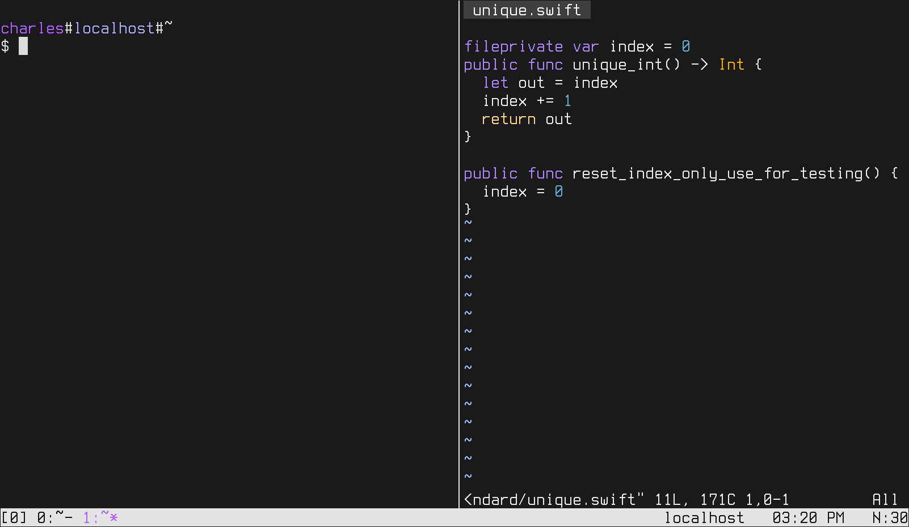

New Font
Mon, Dec 18, 2017I’ve just discovered a new monospace font called “Terminus”. 
It’s the default font for the ubuntu text-only console, and to me it looks pretty great, but generally only in text-only console mode.
Why?? Welp, text only-console mode is not antialiased, and Terminus is a bitmapped font. So in console mode it shows up perfectly crisp: every single pixel in the font illuminates one pixel on the screen.
The problem happens when you try to use Terminus with a gui; it gets antialiased, smudged a bit, and doesn’t look good.
I have in the past tried to code using only the linux console but it can be cumbersome to change the keyboard layout or to, say, view a pdf.
Luckily, I just discovered a now-obvious way to simulate the looks of a text-only console, while still keeping the X server running — turning off antialiasing!
It looks a bit weird it some places, sure, but Firefox does its own antialiasing so only some things are choppy.
And the terminal is beautiful! Every pixel has it’s own spot :)